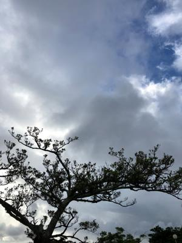
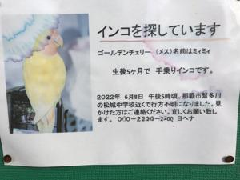
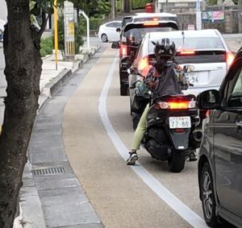

うるがいの話 ある日
最新: 平成４年の台風６号【うるがいの話 ある日】とは 一日だけのプログです
『うるがいの話』の最新一日だけのプログで、通信料が少なく経済的だ。カニの画像をクリックすると全ての日付が載る『うるがいの話』サイトを表示します
|
|
【うるがいの話】 うるがい(ｳﾙｶﾞｲ urugai)とは、『もずくがに』の名前でとても大きくなります。 |
|---|---|
|
|
【カミマヤーの話】 猫のことを方言でマヤーといいます。カミマヤー（kamimayaa）とは、神の猫のことです。 |
|
【たながぁの音楽】 たながぁ（ﾀﾅｶﾞｰ tanagaa）とは手長えびのことで、何種類かあり大きいのは車 エビぐらいになります。 |

|
【ぶながぁの話】 ぶながぁ(ﾌﾞﾅｶﾞｰ bunagaa)とは、赤い髪の毛、赤い身体、そして身長は１ｍ２０ｃｍ ぐらい、川の蟹を食べているの目撃された。場所は沖縄県国頭郡大宜味村のと ある村僕の隣近所に住んでいる爺さんから、聞いた話です。 |
|
|
【ギーマの話】 ギーマ(giima)とは、山原の里山に咲くスズランに似た、 花を付けます。実は食べられます、 気が付くと口の周りが紫になっています。 |
2022年07月31日 (日）平成４年の台風６号
16:15
  
気がつくと台風６号が発生していた、そのせいか気温が下がっている。台風対
策は全く行わないレベルであるがそのうち大きな台風が発生するのだろう。Ｐ
Ｃスピーカの設置と、電源が点かなくなったミニコンポの片付けを兼ねて、３
台あったＰＣのうち、ＰＣ２号を撤去する。ＰＣ２号は、ヨメが利用している
もうすぐ壊れるであろうノートの代替として確保する。
ジョギングしていると、華奢な女性が大型のバイクを乗っていた、思わずカッ
コイイ（大型の免許を取るのは難しいと分かったので）と思いスマホで撮る。
なおナンバーは、加工してある。そして、逃げていったインコのお尋ね貼り紙
を見ていたら、家で飼っていた猫と同じ名前のミィミィである。なかなかユニ
ークである（電話番号も加工してある）。ミィヤーンは、とうとう餌を食べな
くなり、水を何とかヨメがあげている。旧盆までもつか、ヨメはストレスを溜
めている（延命措置はしない）。
１６時０８分 ビットコインの総資産 ￥９、１８５↓